This time we designed two phone unlock interfaces. Alphabody Unlock (Pose based Screen-unlock): Our other design approach was camera based. The idea was to use the teachable machine shown in lecture to train a model using our whole bodies as letters. Swiping up begins the unlock session. A letter is determined by the orientation of the user's whole body. A letter is entered into the password bar every time the timer reaches 0. Users are initially given 20 seconds to get ready in front of the camera. Each countdown after that gives the user 10 seconds to hold their pose for their intended letter. A delete button allows the user to delete the last letter entry. Correct password entries unlock the phone, while incorrect entries result in an error message and restart the session.
After seeing many teachable machine examples we decided to design something using a camera as the sensor. We came up with several ideas like yoga pose sequences or dance, but the body poses as letters idea won over. We chose it because it's easier to track the sequence of poses entered if that data is represented by letters instead of yoga pose names or dance move names. With our design, users can delete past letter entries if they were unintentionally registered. A phone can be secure if a user wants or needs it, as long as they hide before entering their password and make a good one.
We came up with many pose type unlock methods and chose posing letters because it made classification easy. By swiping the screen upward, the unlock process begins. This avoids accidental unlocks. It serves as the homescreen where the user can receive notifications and check the time as they normally can.
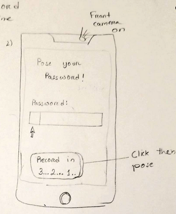We decided we needed a button to record between each pose scan. We decided on a timer that counts down in a loop instead, for user convenience.
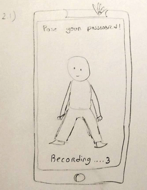With a timer, the user could stay in one spot and enter the whole password. Instead of going back and forth between each letter to press a button.
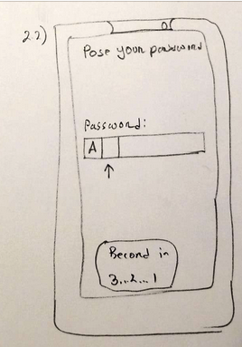The user has an x amount of seconds to pose the correct letter. When the timer hits 0, the current pose made by the user is registered.
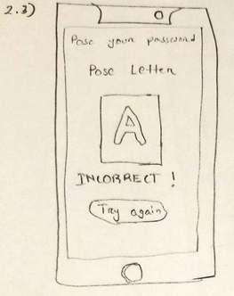Incorrect password entry with a try again button. We decided to go with an automatic reset after the password bar turns red instead, because a try again button makes it more like a game. The automatic reset is more alike password entry so it is good for a phone unlock design that uses letters.
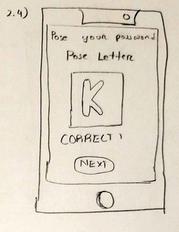We also decided not to go with an input method that gives feedback on every entry. This is less secure than what we changed it to - users inputting the whole password before hitting enter for the password.
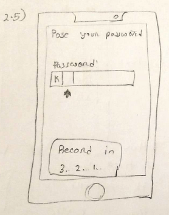Each letter being added in after the timer reaches 0.
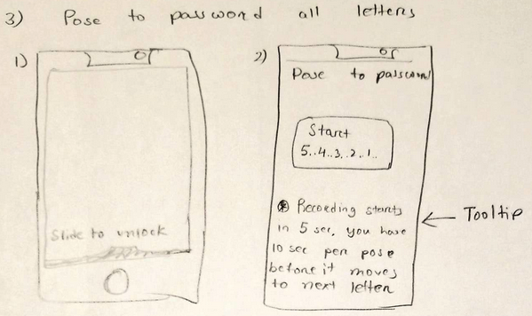We decided 10 seconds is a good enough time for users to pose for each letter scan. Not so long that password entry takes too long and not so so quick that users struggle to pose in time.
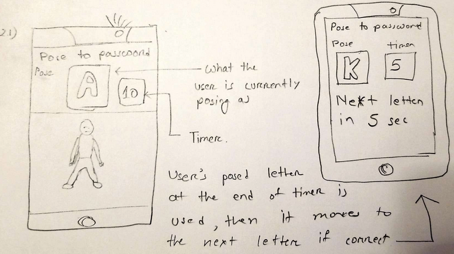Instead of this, we went with the full password entry, then hit enter design.
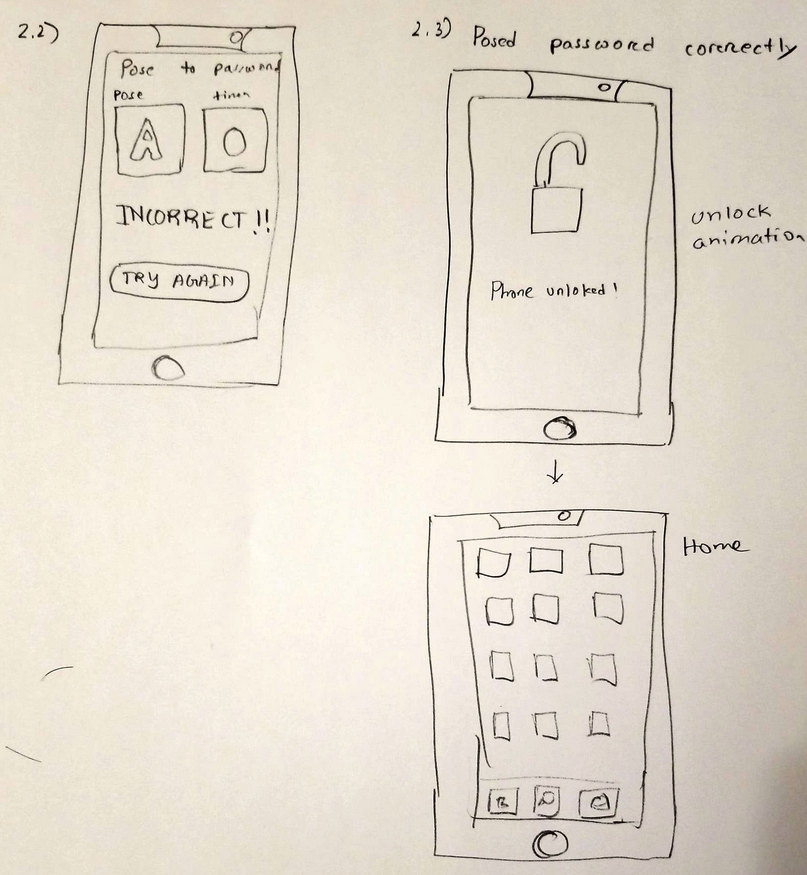This was the general idea; to pose the correct sequence of letters, then hit enter to unlock the phone. This is secure from being opened accidentally.
While deciding on how we should design our machine learning unlock system. We had initially come up with 10 designs that detect, fingerprints, hand signs, rotations for a maze, rotations for a padlock, rubik’s cube pattern, audio for a line from a song, pointed direction sequence, audio for hitting a note, audio for detecting note, and poses made for letters. Out of all these ideas we eventually picked the pose unlock as it is unique since it uses the users whole body, while also having really good security as the user must know the password and how to make the letters to unlock it.
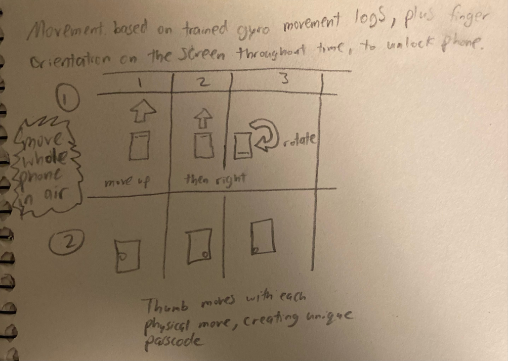 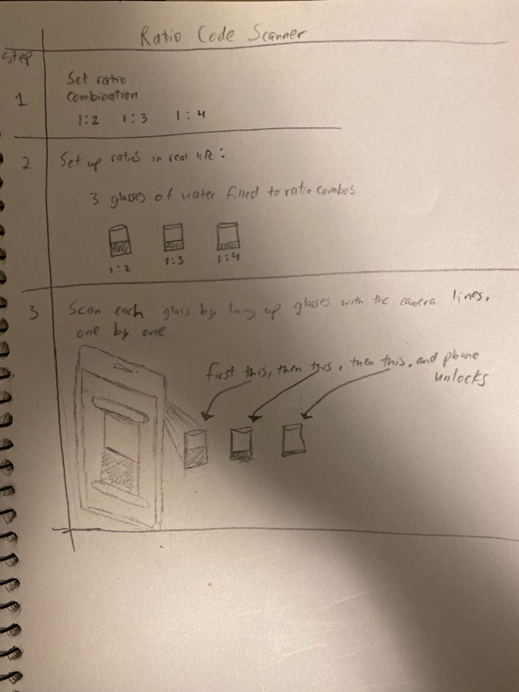 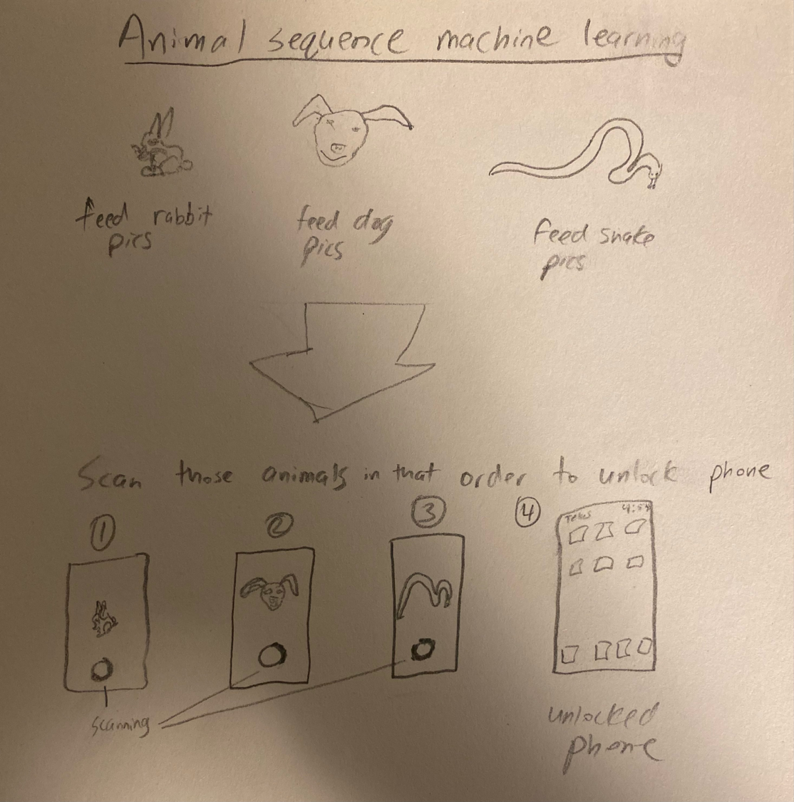We discussed our ideas and made sketches which we sent to the group. I slowly helped develop both ideas and helped polish up the code. I also helped record the video and then did the project documentation.
This design is secure as long as the user unlocks their phone in total privacy. That is a major limitation because the user has to display their whole body in their phones camera. This means they must be far enough away and have to make movements that attract attention. It is otherwise as secure as any simple text based password interface, because the data we trained the machine with translates to letters. Users must also sort of memorize specific body orientations for letters. They may not always be the most intuitive since we trained the machine with our own specific models instead of every user. A potential fix to that issue is to allow users to train their own models for every letter.
{kind=link}
{kind=link}
{kind=link}
{kind=link}
{kind=link}
{kind=link}
{kind=link}
{kind=link}
{kind=link}
{kind=link}
{kind=link}
{kind=link}